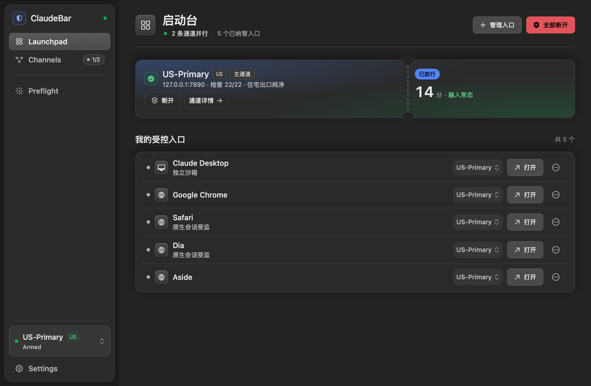
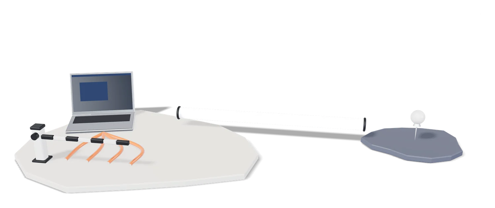
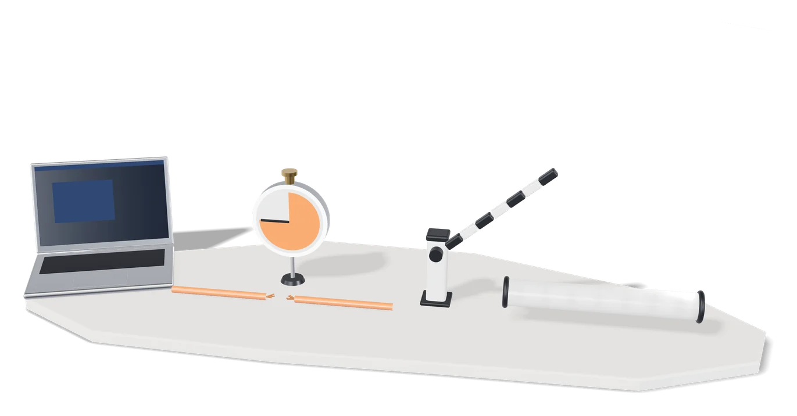
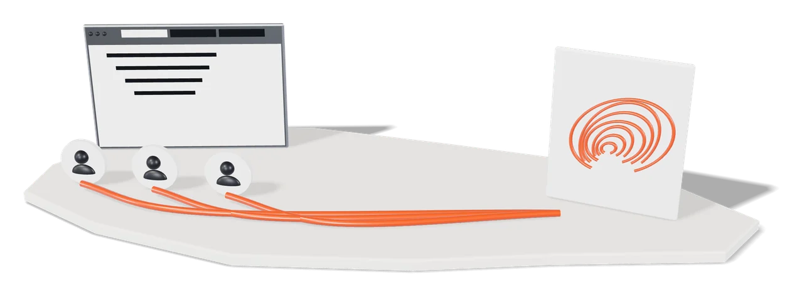
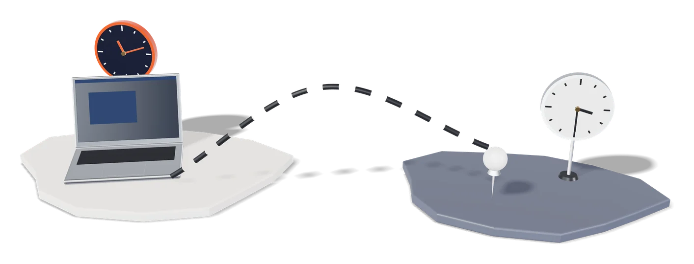

先核验，
再放行。
- 应用先连本机门禁，门禁再交给档案指定的代理。
- 启动前，核验出口的国家和 IP。
- 对不上就不启动；中途漂了，就隔离会话。
一条受管连接的四站
看门禁路径- 应用
- 127.0.0.1
- 上游代理
- 出口

代理开着，
流量还在绕路。
- DNS、IPv6、WebRTC、QUIC 都可能绕开代理。
- 绕出去的一小段，会带出真实位置。
- ClaudeBar 用受管启动参数和本地探针把旁路盖住。
- 有公网 IPv6 时标为「参数缓解」，不冒充实测。
四条旁路
看保护范围
网络断了，
该等还是该查？
- 切换网络、合上盖子，会话会先停下。
- 宽限期里先等，出口对上了就恢复，默认等 4 秒。
- 出口变了，或探测被拒、到期没恢复，就隔离并写明原因。
宽限期
读恢复指南
出口已核验。新的受管连接可以握手。
一个 Chrome，
登了三个号。
- 多开 Profile，分开的只是 Cookie 和缓存。
- 约 79 项指纹里，有 74 项还是同一套。
- 每个档案独立数据目录，CLI 单独隔离。
- 多个网页号，换不同内核的浏览器。
一套指纹
读多账号隔离
出口在美国，
时区在上海。
- 代理把出口换到了美国，系统的时区和语言还是中国的。
- ClaudeBar 按出口国家，给受管进程对齐时区和语言。
- 启动前，还会剥离宿主带进来的环境变量。
两只钟
看环境一致性
启动前对齐
- 出口
美国美国- 时区
UTC+8UTC−5- 语言
zh-CNen-US